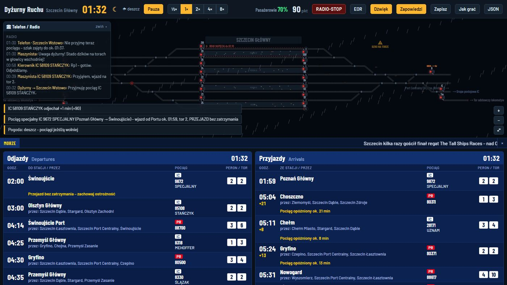
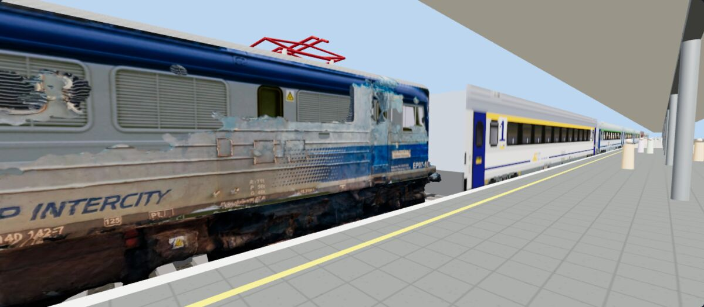
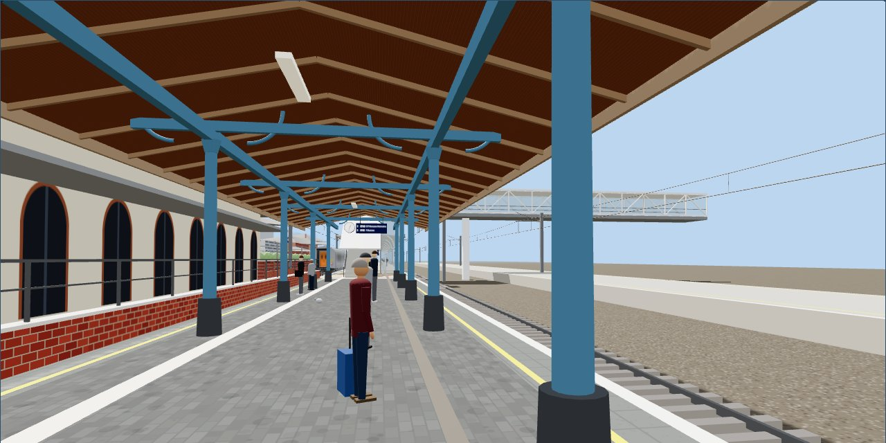
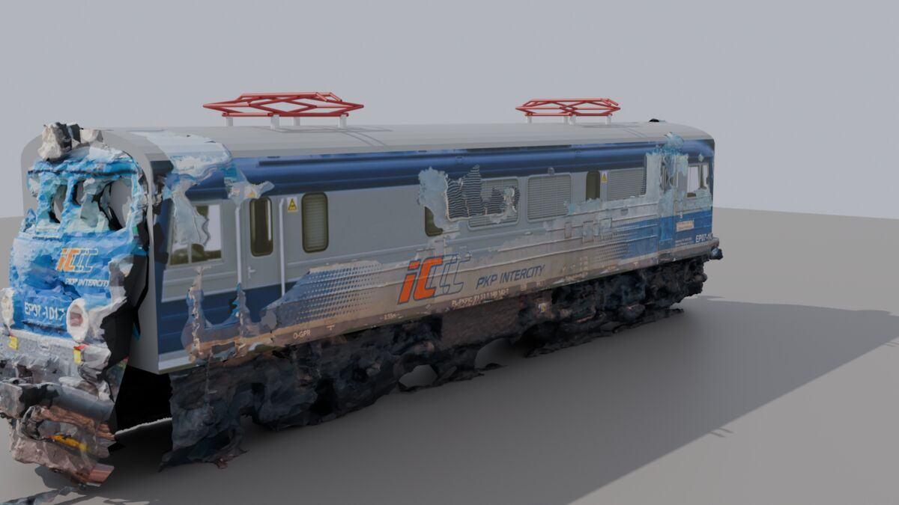

Przyjmujesz pociągi od sąsiednich posterunków, ustawiasz przebiegi na semaforach i wyprawiasz składy według prawdziwego rozkładu z plakatów stacyjnych. Doba na stacji z czterema peronami i ośmioma torami, a na każdy peron możesz zejść i zobaczyć wjeżdżający pociąg w 3D.
Gra dopiero powstaje. Możesz już zagrać w demo: poranna zmiana na nastawni od 7:00 do 9:00 czasu gry, w przeglądarce. Pełna gra i wersja na Windows będą dostępne wkrótce.
Rozkład gra czyta z plakatów PKP PLK „Przyjazdy” i „Odjazdy” (PDF): godziny, perony, tory i dni kursowania. Jedna doba to od kilkudziesięciu do ponad dwustu pociągów. Układ torów to schemat oparty na stacji, a nie kopia urządzeń sterowania ruchem.
Za udaną zmianę dostajesz punkty, a na koniec premię za zadowolenie podróżnych.

Szczecin Wstowo, Gumieńce i Port Centralny dzwonią z zapowiedzią. Przyjmujesz pociąg albo każesz mu czekać, gdy szlak jest zajęty.
Pociąg rusza dopiero, gdy kierownik da gwizdkiem sygnał Rp1 i semafor wskazuje jazdę.
Przy usterce semafora wpuszczasz pociąg na sygnał zastępczy. Jazdę po torze niewłaściwym wolno wyprawić tylko przy awarii rozjazdu i tylko wtedy, gdy nic nie jedzie z przeciwka.
Grupy są po obu stronach stacji, więc składy IC nie zmieniają kierunku. Gdy jedna grupa jest zamknięta na kilka godzin, robisz oblot lokomotywy torem odstawczym.
Dziki na torze, brak napięcia przy peronie, usterki lokomotyw i zespołów trakcyjnych. Każde zdarzenie trzeba obsłużyć, zanim zablokuje ruch.
Deszcz, mgła, śnieg i burza spowalniają ruch. Zimą włączasz elektryczne ogrzewanie rozjazdów. Noc przychodzi o 22:00.
Tłumy na peronach, przesiadki zgłaszane przez kierowników pociągów i zmiana toru w ostatniej chwili. Zadowolenie podróżnych wpływa na wynik.
Zwykły dzień, wakacyjne pociągi nad morze, burza, zima i trening dla początkujących. Pasek na dole podaje sprawdzone ciekawostki o Szczecinie.
Kliknij peron na schemacie, a potem przycisk 3D. Kamera sama śledzi wjeżdżający pociąg, ale możesz też przejść się po peronie: pod wiatą, wzdłuż linii bezpieczeństwa, między podróżnymi. Nad torami wisi sieć trakcyjna ze słupami co 55 m i przewodem jezdnym 5,6 m nad główką szyny. Tablice peronowe pokazują najbliższe odjazdy z gry, a pora dnia i pogoda zmieniają światło.



Modele 3D powstają metodą fotogrametrii: kilkaset zdjęć jednego pojazdu, zrobionych z peronu i zza torów, składa się w siatkę z teksturą. Potem skrypt sam wycina pojazd ze skanu całego peronu, skaluje go do prawdziwej długości i robi z niego miniaturę do gry.
Wyniki wysłane przez graczy po skończonej zmianie. Wynik wysyłasz z ekranu końca zmiany w grze.
| # | Gracz | Punkty | Zadowolenie | Data |
|---|---|---|---|---|
| Wczytywanie… | ||||
Większość pracy to klikanie semaforów na schemacie i wybór przebiegu z listy. Klawiatura przyspiesza resztę.
| Klawisz | Działanie |
|---|---|
| Spacja | pauza / wznowienie |
| 0 1 2 3 4 | tempo gry: ½×, 1×, 2×, 4×, 8× |
| T | odbierz telefon z zapowiedzią pociągu |
| Esc | zamknij okno peronu lub menu |
| W S A D / strzałki | peron 3D: chodzenie |
| Q E · Shift | peron 3D: obrót, bieg |
| przeciąganie myszą · kółko | peron 3D: rozglądanie się, przejście wzdłuż peronu |
| F11 | pełny ekran (wersja na Windows) |
Gra powstaje po godzinach i każdy głos się liczy. Daj znać, że Ci się podoba, zapisz się na wiadomość o nowej wersji albo zaproponuj, co zmienić.
Tak. Demo w przeglądarce jest darmowe i nie wymaga rejestracji ani instalacji – wystarczy kliknąć „Zagraj w demo”.
W każdej nowoczesnej przeglądarce na komputerze, a także na telefonie i tablecie (sterowanie dotykiem, przybliżanie dwoma palcami). Wersja na Windows z modelami 3D jest w przygotowaniu.
Tak. Gra korzysta z oficjalnych plakatów PKP PLK „Odjazdy” i „Przyjazdy” dla stacji Szczecin Główny – godziny, perony, tory i dni kursowania pociągów PolRegio, Intercity i przewoźników z Niemiec.
Przyjmujesz telefoniczne zapowiedzi pociągów od sąsiednich posterunków, ustawiasz przebiegi i semafory wjazdowe i wyjazdowe, wyprawiasz pociągi po sygnale „Gotów” kierownika i reagujesz na awarie rozjazdów, opóźnienia, pogodę i tłumy podróżnych.
Nie. To niezależna, niekomercyjna gra fanowska jednego autora (mrowkazq), niezwiązana z PKP PLK, PKP Intercity, PolRegio ani z grą SimRail.
Demo to poranna zmiana od 7:00 do 9:00 czasu gry. Tempo można zmieniać od ½× do 8×, a grę zapisać i wrócić do niej później.
Demo w przeglądarce jest już dostępne. Pełna gra i wersja na Windows pojawią się wkrótce.
modele z pojazdami ze zdjęć.Rozpakuj ZIP i uruchom DyzurnyRuchu.exe (folder modele musi zostać obok).